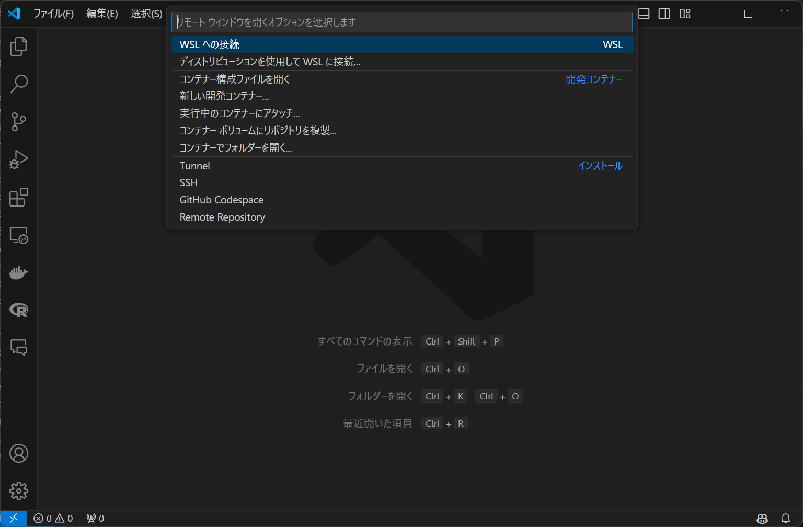
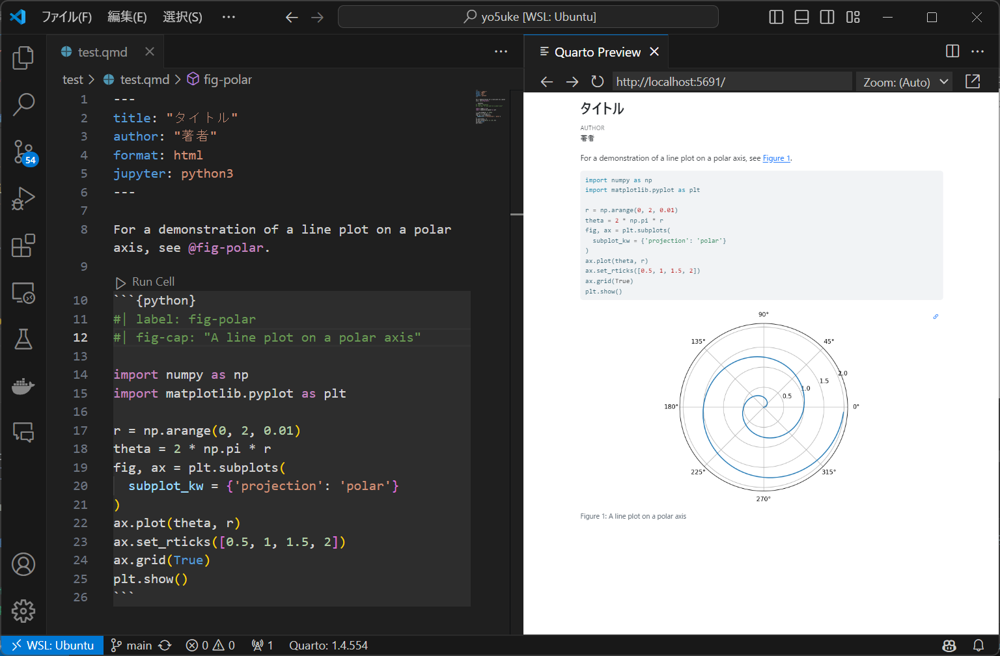

import numpy as np
import matplotlib.pyplot as plt
r = np.arange(0, 2, 0.01)
theta = 2 * np.pi * r
fig, ax = plt.subplots(
subplot_kw = {'projection': 'polar'}
)
ax.plot(theta, r)
ax.set_rticks([0.5, 1, 1.5, 2])
ax.grid(True)
plt.show()
R ユーザーはこれでよくない？
この記事は Windows ユーザー向けです。ただ、事前準備が異なるだけで、それ以降は Mac ユーザーの方でも参考になると思います。
Python の環境構築って初心者にはなんだかめんどくさいですよね。私も Python はあまり使わないので、環境構築には苦労しています。
今回はR Markdown に似ているでおなじみ（？）の Quarto を用いた、Python の環境構築の方法をご紹介します。
Anaconda をインストールして Jupiter Notebook を使っている方も多いと思いますが、今回は Anaconda ではなく Quarto で Python を使ってみましょう。
Quarto は、RStudio のチームが開発している、R Markdown に似たドキュメント作成ツールです。R Markdown は R のためのドキュメント作成ツールですが、Quarto は Python や Julia など他の言語でも使えるようになっています。
Quarto は、RStudio のチームが開発しているため、RStudio との親和性が高いです。RStudio と Quarto を組み合わせて使うことで、R と Python の両方を使ったドキュメント作成が可能になります1。
以前の記事で、Docker を使って環境構築する方法をご紹介しましたが、この記事を最初に読んでいる方に向けて、より簡単な手順で環境構築する方法をご紹介します。
VSCode をインストールしていること
WSL2, Ubuntu をインストールしていること
ここまではそれほど難しくありませんので、まだの方はこちらの記事をご覧ください。
VSCode を起動して、画面左下の >< マークをクリックして、「WSL への接続」を選択します。

画面上部「ターミナル」から「新しいターミナル」を選択2し、ターミナルを開く
以下のコマンドを入力して実行
URL の部分は最新のものに変えてください。
Quarto ホームページからプラットフォームが Ubuntu 18+/Debian 10+ であるダウンロードリンクを使用してください。
bash
# Quartoパッケージをダウンロード（URL は適宜更新）
wget https://github.com/quarto-dev/quarto-cli/releases/download/v1.4.554/quarto-1.4.554-linux-amd64.deb
# パッケージをインストール（バージョン部分は適宜変更）
sudo dpkg -i quarto-1.4.554-linux-amd64.debDocker を使っている場合は、Dockerfile に以下のコマンドを追加してください。
Dockerfile
RUN wget -O quarto.deb "https://github.com/quarto-dev/quarto-cli/releases/download/v1.4.553/quarto-1.4.553-linux-amd64.deb" && \
dpkg -i quarto.deb && \
rm quarto.debちなみに、私の記事で紹介しているテンプレートを使用される場合は、既にこのコマンドが追加されているので、追加する必要はありません。
これで Quarto のインストールは完了です。
拡張機能の検索窓から、次の拡張機能をインストールしてください。
quarto.quarto（Quarto）
ms-python.python（Python）
ms-toolsai.jupyter（Jupyter）
画面左上の「ファイル」から「新しいファイル」を選択、「Quarto Document」を選んで新規ファイルを作成します。
Ctrl + S でファイルを保存できます。保存する際に任意のフォルダに test.qmd などの名前で保存してください。yaml ヘッダーを次のように編集します。
YAML ヘッダー
---
title: "タイトル"
author: "著者"
format: html
jupyter: python3
---Quarto
For a demonstration of a line plot on a polar axis, see @fig-polar.
```{python}
#| label: fig-polar
#| fig-cap: "A line plot on a polar axis"
import numpy as np
import matplotlib.pyplot as plt
r = np.arange(0, 2, 0.01)
theta = 2 * np.pi * r
fig, ax = plt.subplots(
subplot_kw = {'projection': 'polar'}
)
ax.plot(theta, r)
ax.set_rticks([0.5, 1, 1.5, 2])
ax.grid(True)
plt.show()
```パッケージのインストール
今回、numpy と matplotlib を使っているので、はじめにこれらをインストールしないとエラーが出ます。
また、実行する際に ModuleNotFoundError: が出たら、そのモジュールもインストールする必要があります3。
ターミナルから以下のコマンドを実行してください。
bash
pip install numpy matplotlib nbformat nbclient実行

R を使うときと同様に、Python のコードを書いて実行することができました。
R ユーザーの私としては、エンジンは R Markdown と同じ Knitr を使っているので、基本的に R 環境に Python を混ぜるということになります。
そのままでは R と Python が混在したコードは出力できません4が、reticulate パッケージを使うことで R を使っていても Python が混ざったコードを出力できます。
例えばこの記事は R 環境で書いていますのでこのままでは Python を使えません。そこで reticulate パッケージをインストールします。
R
install.packages('reticulate')ライブラリで読み込む必要はありません。
先ほどのコードを書いてみると、
import numpy as np
import matplotlib.pyplot as plt
r = np.arange(0, 2, 0.01)
theta = 2 * np.pi * r
fig, ax = plt.subplots(
subplot_kw = {'projection': 'polar'}
)
ax.plot(theta, r)
ax.set_rticks([0.5, 1, 1.5, 2])
ax.grid(True)
plt.show()無事 図 1 が出力できました。
このように R と Python が混在していても出力できますので、必要に応じて使ってみてください。
今回は Quarto を使って Python の環境構築を行いました。
Anaconda と比べると、Quarto はより柔軟で、R でも Python でも使えるのがメリットです。
また、書き方はほぼ R Markdown と同じなので、普段 R を使っている方にはすぐに慣れると思います。
ただし、R と Python を1つのファイルで併用する際には追加でパッケージのインストールが必要です。
以上です。お疲れ様でした！
2024年5月16日：R と Python が混在したコードの出力について追加